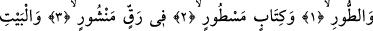
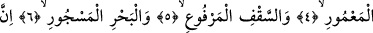
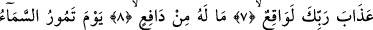
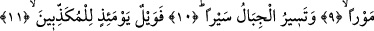
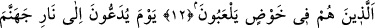
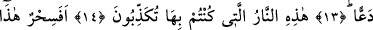
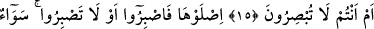
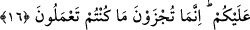

RABBİNİN AZABI
MUTLAKA VUKÛ BULACAKTIR
Bismillâhirrahmânirrahîm
1. Tûr’a,
2. Satır satır yazılmış Kitab’a,
3. Yayılmış ince deri üzerine
4. Beyt-i Ma’mûr’a,
5. Yükseltilmiş tavana,
6. Dolu denize andolsun ki,
7. Rabbinin azabı mutlaka vuku bulacaktır.
8. Ona engel olacak hiçbir şey yoktur.
9. O gün gök sallanıp çalkalanır.
10. Dağlar yürüdükçe yürür.
11. Yalanlayanların vay hâline o gün!
12. Ki onlar daldıkları bâtıl içinde oyalanıp duranlardır.
13. O gün cehennem ateşine itilip atılırlar.
14. “İşte yalanlayıp durduğunuz ateş budur!” denilir.
15. Bir büyü müdür bu, yoksa görmüyor musunuz?
16. Girin oraya, sabretseniz de sabretmeseniz de artık sizin için birdir. Siz ancak
yaptıklarınızın karşılığına çarptırılacaksınız.